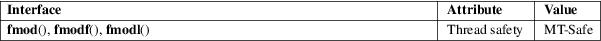

fmod, fmodf, fmodl − floating-point remainder function
Math library (libm, −lm)
#include <math.h>
double
fmod(double x, double y);
float fmodf(float x, float y);
long double fmodl(long double x, long
double y);
Feature Test Macro Requirements for glibc (see feature_test_macros(7)):
fmodf(),
fmodl():
_ISOC99_SOURCE || _POSIX_C_SOURCE >= 200112L
|| /* Since glibc 2.19: */ _DEFAULT_SOURCE
|| /* glibc <= 2.19: */ _BSD_SOURCE || _SVID_SOURCE
These functions compute the floating-point remainder of dividing x by y. The return value is x − n * y, where n is the quotient of x / y, rounded toward zero to an integer.
On success, these functions return the value x − n*y, for some integer n, such that the returned value has the same sign as x and a magnitude less than the magnitude of y.
If x or y is a NaN, a NaN is returned.
If x is an infinity, a domain error occurs, and a NaN is returned.
If y is zero, a domain error occurs, and a NaN is returned.
If x is +0 (−0), and y is not zero, +0 (−0) is returned.
See math_error(7) for information on how to determine whether an error has occurred when calling these functions.
The following
errors can occur:
Domain error: x is an infinity
errno is set to EDOM (but see BUGS). An invalid floating-point exception (FE_INVALID) is raised.
Domain error: y is zero
errno is set to EDOM. An invalid floating-point exception (FE_INVALID) is raised.
For an explanation of the terms used in this section, see attributes(7).

C11, POSIX.1-2008.
C99, POSIX.1-2001.
The variant returning double also conforms to SVr4, 4.3BSD, C89.
Before glibc 2.10, the glibc implementation did not set errno to EDOM when a domain error occurred for an infinite x.
remainder(3)